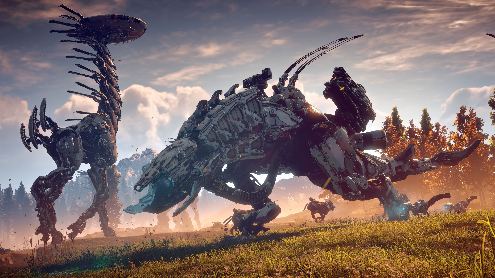
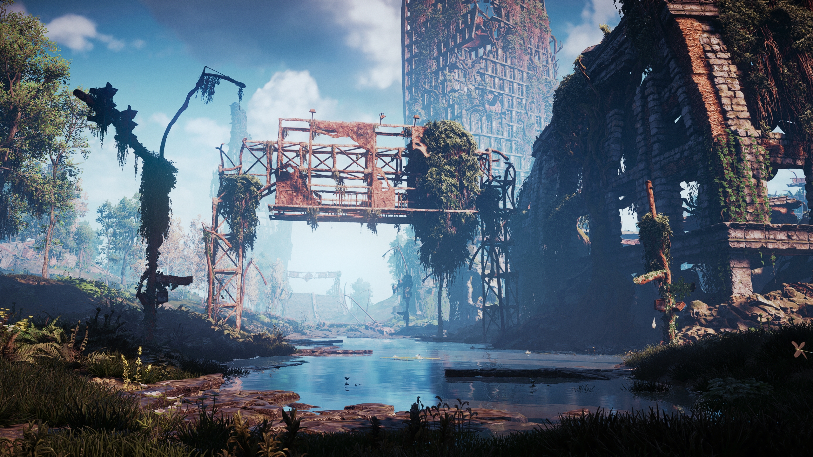

Horizon : Zero Dawn est une toute nouvelle licence du développeur Néerlandais Guerilla Games,
auquel on doit la série Killzone, et est édité par Sony. Son développement a duré près de 5
années. Le jeu est sorti le 1er Mars 2017, exclusivement sur Playstation 4.
Il utilise un tout nouveau moteur graphique développé pour l’occasion par le studio Néerlandais
et est nommé Decima. Le résultat est tout bonnement impressionnant et son avenir radieux !
Il s’agit d’un Action-RPG se déroulant dans un univers post-post-apocalyptique, où le monde
tel qu’on le connaît actuellement est révolu depuis bien longtemps, et où les traces visibles
qu’il a pu laisser sont minimes.
Vous incarnez Aloy, une jeune femme qui cherche à comprendre un monde qui lui échappe, rempli
de créatures robotiques hostiles et particulièrement impressionnantes, que ce soit par leur
apparence ou leur comportement. Cet état de fait amène un fort sentiment d’identification à
l’héroïne, les questions qu’on peut se poser étant les mêmes que celles que se posent Aloy.
La terre ne nous appartient plus !

Le jeu se déroule dans un monde-ouvert particulièrement grand et varié. Chaque point de vue
disponible dans le jeu est un prétexte à la contemplation tant l’univers est magnifié par le
moteur graphique et la direction artistique du jeu. L’émerveillement est sans doute le terme
qui colle le mieux pour décrire les sensations qu’on éprouve à explorer ce monde incroyablement riche.
Cette aventure vous fera traverser des environnements variés : des plaines et des forêts tempérées
aux jungles luxuriantes en passant par les montagnes enneigées et les canyons arides. Dépaysement
assuré ! Les villages sont également de la partie tout comme les zones souterraines.
Les changements climatiques sont également de la partie comme le cycle jour/nuit. Attendez-vous à
subir quelques « tempêtes » franchement réalistes qui changeront votre approche du gameplay. Les
effets de lumière ne sont pas en reste et les levers du jour feront rougeoyer votre environnement
de bien belle manière.
Des traces de notre monde moderne sont également de la partie et feront office de ruines d’une
civilisation disparue où la nature a repris ses droits.
Une civilization oubliee

Le jeu se déroule 1000 ans après notre époque. Notre civilisation est éteinte et l’humanité s’est
réorganisée sous forme de tribus primitives en tentant tant bien que mal de se protéger des créatures
robotisées qui peuplent ce monde. Pourquoi notre civilisation s’est-elle éteinte ? Pourquoi ces
robots si évolués sèment la terreur ? Ces questions comme celles sur les origines d’Aloy seront les
principaux axes narratifs développés par Guerilla Games.
A l’histoire principale déjà conséquente s’ajoutent également de nombreuses quêtes et activités
annexes qui enrichiront l’expérience de jeu de manière significative. Des documents écrits et audio,
disséminés un peu partout sur la carte, vous permettront de mieux appréhender le monde créé par
Guerilla Games.
L’histoire est prenante et l’envie d’avoir des réponses particulièrement entêtante. Difficile de ne
pas s’attacher aux protagonistes !
La naissance d’une legende
Aloy a une enfance difficile : élévée par Rost, un paria banni par la tribu des Nora, Aloy ne connait
pas ses parents biologiques. Elle-même rabaissée au rang de paria, elle n’aura que très peu de contacts
avec le monde extérieur. Rost lui apprendra à survivre dans ce monde sans pitié sans pouvoir lui
apporter de réponses sur ses origines et les raisons de son propre bannissement.
Une fois arrivée à l’âge adulte, Aloy pourra enfin quitter son foyer en quête de réponse et fera de
nombreuses rencontres : des personnages hauts en couleur, des tribus aux caractéristiques différentes
les unes des autres, et bien sûr des bandits sans vergogne !
De part son caractère, Aloy ne vous laissera pas indifférents. Rebelle, elle se dressera souvent contre
les règles établies et les dogmes des différentes tribus parfois archaïques. Humaniste et empathique
elle choisira d’aider les laisser pour compte. Enfin, progressiste, elle ne manquera pas de vous poser
quelques questions sur l’égalité des sexes à travers les âges, les principaux rôles de la tribu des
Nora étant par exemple tenu par des femmes !
Connaissez votre ennemi

Les machines sont les ennemis qui vous donneront le plus de fil à retordre pendant vos aventures.
Au nombre conséquent de 25, elles ont toutes des apparences et des rôles différents. Tandis que
certaines auront pour rôle de recycler les machines hors d’usage, d’autres auront pour but de les
protéger pendant l’accomplissement de leurs taches.
Préparation et stratégie sont essentielles pour affronter ces créatures de métal, tant les machines
sont destructrices. Vous pourrez les amener dans des pièges que vous aurez préalablement installés
et tirer parti de leurs faiblesses pour les mettre à terre.Aloy a tout un arsenal d’armes et de
pièges que vous débloquerez et apprendrez à utiliser au fil de votre progression. Certaines créatures
mécaniques seront sensibles au feu quand d’autres auront un blindage qui se détachera plus facilement
permettant à Aloy de faire tomber, par exemple, leurs différentes armes. La façon d’aborder un combat
peut se faire de bien des manières et constitue un des gros points forts du jeu !